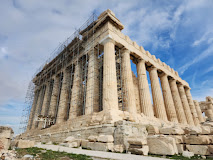

Templo Expiatório da Sagrada Família, também conhecido simplesmente como Sagrada Família, é um grande templo católico da cidade de Barcelona, Catalunha, Espanha, desenhado pelo arquiteto catalão Antoni Gaudí, e considerado por muitos críticos como a sua obra-prima e expoente da arquitetura modernista catalã.

A Torre Eiffel é uma torre treliçada de ferro forjado no Champ de Mars, em Paris, França. Tem o nome do engenheiro Gustave Eiffel, cuja empresa projetou e construiu a torre de 1887 a 1889.

Coliseu, também conhecido como Anfiteatro Flaviano, é um anfiteatro oval localizado no centro da cidade de Roma, capital da Itália. Construído com tijolos revestidos de argamassa e areia, e originalmente cobertos com travertino é o maior anfiteatro já construído e está situado a leste do Fórum Romano.
A Acrópole de Atenas é a mais conhecida e importante acrópole grega. Embora existam muitas outras acrópoles na Grécia, o significado da Acrópole de Atenas é tal que é comumente conhecida como A Acrópole, sem qualificação.